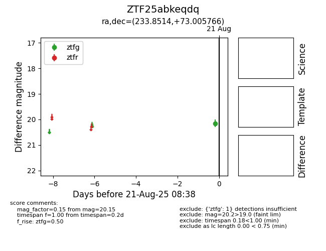

Target ZTF25abkeqdq at 2025-08-21 08:38, see:
FINK: fink-portal.org/ZTF25abkeqdq
Lasair: lasair-ztf.lsst.ac.uk/objects/ZTF25abkeqdq
ALeRCE: alerce.online/object/ZTF25abkeqdq
alt names
ZTF25abkeqdq (ztf,alerce)
coordinates:
equatorial (ra, dec) = (233.8514,+73.00577)
galactic (l, b) = (108.6025,+39.22840)
photometry
last ztfg=20.15
1 ztfg detections
